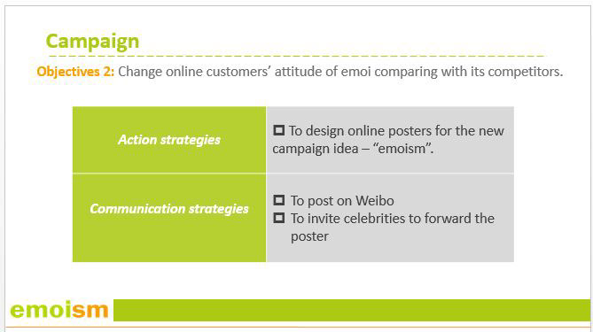

Online Branding
Online Branding Strategies for Emoi
Emoi is a brand of daily living equipment such as dining utensils, home supplies, office appliances and life leisure luggage and bags. It is domestic, providing equipment which are comfortable, enjoyable, simple, and in an equitable price. Their products mainly target audiences who enjoy their life and pay attention to their life qualities. There are two kinds of sale models—exclusive shop and e-business. Its exclusive shops can be found in some big cities in China like Shenzhen, Hong Kong, Beijing, Shanghai and Guangzhou, etc. and their e-business is active on famous online-sales platforms like Tmall (Taobao), Amazon and they also have their official website for the online shopping, selling products like furniture, daily living equipment, traveling tools and clothing in a concise design style (Baidu.com & emoi.com).
S.W.O.T Analysis
Age
Emoi’s target market is young people around 20 to 35 years old who have already shaped their own lifestyle and also have the consumption capability (xkb.com.cn).
Income, Education and Occupation
These criteria are used by marketers to measure ability of consumers' spending. The salary earning is related to what job the consumer holds, which is in turn rated by the level and quality of his or her received education. Emoi’s target consumers are upper-middle income and education level consumers. The price of emoi is a little bit higher, but the quality of emoi is better than the similar brands. So these consumers may have the abilities to realize emoi’s quality and receive the brand concept from emoi as well, especially people are involved in environmental industries or who are white-collar employees will be more interested in emoi.
Lifestyle
Emoi wishes to share a simple, beautiful and sustainable lifestyle with its target market. The target market would agree with this kind of lifestyle and enjoy the simple and eco-friendly products, just as emoi. Although emoi is more expensive than other products, its target markets are willing to purchase it because of its unique brand concept and product concept (globrand.com).
Psychology
The target market of emoi may like the products based on simplicity, functionality, aesthetics and sustainability. Based on perception of enhancing daily lifestyle, design at emoi brings one closer to nature. High-quality products are the pursuit of the target market. Emoi’s raw materials are purchased and their features are enhanced. In addition to an aesthetic sense, the target market should focuses on functionally and durability of products and emoi is able to meet the expectation of users (globrand.com).
Positioning
Based on the brand emoi’s positive reputation of their products materials and fascinating designs in the daily living equipment market, and their advantages on multiple-media platform resources, this advertising campaign, ‘emoism’, focuses on developing high quality service with a strong brand image and expanding a new communicating platform between customers and the brand, being eager to fulfill customers’ needs and wants (esoftbank.com.cn).
Campaign slogan and theme Slogan: Emoism, green your life.
Emoism consists of the brand name ‘emoi’, which means basic living and ‘-ism’ which means a kind of faith. We want to assign values to this symbolic word:
- Liberal attitude
- Green faith
The theme color of emoi is green and it not only represents color but also means vernal attitude and youth, which is matching the brand image—fresh and new. Furthermore, the vernal meaning is deeply related to the liberal one and emoi’s products are in a comfortable design, very simple and without any restrictions, delivering an energetic message to customers—we should live in a liberal and positive way.
As mentioned above, the theme color green of emoi can deliver a positive lifestyle message. Also it is a strong differentiate brand image comparing with other competitors like Muji’s theme color of white. As the product materials are organic and qualified, utilizing this theme color, we can form a faith with emoi’s products, assigning values to the brand, which is sustainable and original. Make emoi’s customers live an environmental and high-quality life.



This Project is my capstone project for online branding.